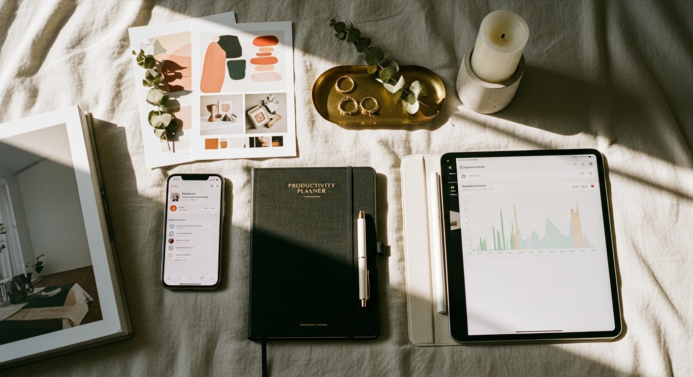
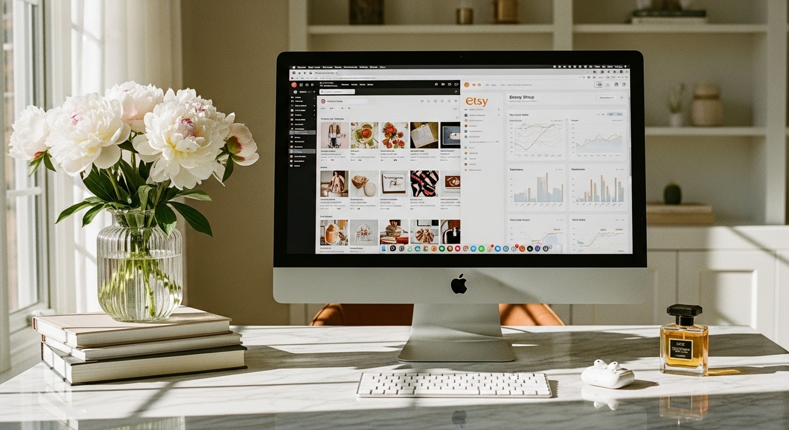

pinterest for etsy sellers


PINTEREST FOR ETSY SELLERS: HOW TO DRIVE REAL TRAFFIC AND SALES IN 2026
The fastest way to use Pinterest as an Etsy seller is to set up a business account, enable Rich Pins for your listings, and create 3-5 high-quality pins per week that link directly to your products. That's it. Not 25 pins a day. Not hours of scheduling. Just consistent, well-made pins that show up when buyers search.
Pinterest is a search engine where 85% of weekly users actively plan purchases. That's not casual scrolling - that's people with credit cards ready, looking for exactly what you sell. And unlike Instagram where your post dies in 48 hours, a single Pinterest pin can drive traffic to your Etsy shop for months or even years.
I've watched Etsy sellers spend hours on Instagram reels that get 200 views and disappear. Meanwhile, a simple product pin they made six months ago is still sending five visitors a day to their shop. The math isn't even close.
But here's what most Pinterest guides won't tell you: the strategy that worked in 2023 will actually hurt you in 2026. The algorithm has changed. The pinning frequency has changed. What counts as "quality" has changed. If you're still following advice about pinning 15 times a day or using five different scheduling tools, you're working harder than you need to for worse results.
This guide covers exactly what works right now - from account setup to pin creation to the weekly routine that actually fits into a busy maker's schedule.
WHY PINTEREST WORKS DIFFERENTLY THAN OTHER PLATFORMS FOR ETSY SELLERS
Most social media platforms reward constant presence. Skip a week on Instagram and your reach tanks. Take a break from TikTok and the algorithm forgets you exist. Pinterest operates on completely different rules.
Pinterest is a visual search engine, not a social network. When someone types "personalized name necklace gift for mom" into Pinterest, they're not looking for entertainment. They're shopping. They have a specific need, and they want to find products that match. Your pin showing up in that search is equivalent to showing up on the first page of Google - except Pinterest is far less competitive for most Etsy niches.
The shelf life difference is staggering. An Instagram post reaches most of its audience within 48 hours. A Pinterest pin? Four months is the average lifespan, and many pins continue driving traffic for years. I've seen sellers get consistent clicks from pins they created in 2022. That kind of compounding return simply doesn't exist on other platforms.
Here's what this means practically: the time you invest in Pinterest today keeps paying you back. One afternoon creating 10 solid pins could drive traffic to your shop for the next two years. Compare that to the hamster wheel of daily Instagram stories and the math becomes obvious.
Pinterest also has a unique user mindset. 89% of users specifically use the platform for purchase decisions. They're not there to watch dance trends or keep up with friends. They're planning - weddings, home decor, gifts, wardrobes, businesses. If what you sell fits into someone's plans, Pinterest puts you directly in front of them at the exact moment they're ready to buy.
For Etsy sellers especially, this creates a powerful combination. Etsy already has buyers with purchase intent. Pinterest brings more of those buyers to your listings before they even start searching on Etsy.
SETTING UP YOUR PINTEREST ACCOUNT THE RIGHT WAY
Before you pin anything, your account structure needs to work for you. This takes about an hour upfront and determines whether your pins get shown to buyers or buried.
Step 1: Convert to a Pinterest Business Account
Go to pinterest.com/business/create. You can convert an existing personal account or start fresh. Use your Etsy shop name (or a recognizable variation) as your display name so buyers can find you across platforms.
A business account gives you access to analytics, Rich Pins, and the ability to claim your Etsy shop URL. Without it, you're essentially invisible to the algorithm's commercial features.
Step 2: Claim Your Etsy Shop
In your Pinterest business settings, find "Claim" and enter your Etsy shop URL. Pinterest will give you a verification method - usually adding a small piece of code. Once claimed, every pin linking to your shop displays your profile picture and a follow button. This builds trust and brand recognition.
Step 3: Enable Rich Pins
Rich Pins are non-negotiable for Etsy sellers. They automatically pull your listing's real-time price, availability, and product details directly into Pinterest. When your price changes on Etsy, it updates on Pinterest. When something sells out, the pin reflects that.
To enable: go to Pinterest's Rich Pin Validator tool, enter any listing URL from your shop, and click validate. If your shop is claimed properly, Rich Pins should activate automatically.
DALL-E / ChatGPT image prompt
A realistic mockup screenshot of the Pinterest Rich Pin Validator tool interface. Clean white background with Pinterest red (#e60023) header. Center shows a text input field with an Etsy listing URL pasted in. Below the input is a red "Validate" button. Under that, a green success message reads "Your Rich Pins have been approved!" with checkmarks next to "Product information detected" and "Price: $24.99" and "Availability: In stock". Landscape 16:9, modern flat UI design, clearly readable text.
Step 4: Optimize Your Profile
Your profile photo should be your logo or a professional headshot - consistent with your Etsy branding. Your bio needs to include keywords your ideal buyer would search, plus personality.
Good example: "Handmade personalized jewelry for women who want meaningful pieces | Shop my Etsy for custom name necklaces & birthstone gifts ✨"
Bad example: "I love making jewelry! Follow for pretty things!"
The difference? The first version tells Pinterest (and humans) exactly what you sell and who you serve. The second tells them nothing useful.
BUILDING A BOARD STRUCTURE THAT ACTUALLY DRIVES TRAFFIC
Your board structure matters more than your follower count. Pinterest prioritizes topical relevance, which means a seller with 500 followers but tightly-organized, niche boards will outperform someone with 10,000 followers and scattered content.
The 80/20 rule still applies - but differently than you'd expect. About 80% of your boards should be curated lifestyle and inspiration content that your ideal buyer loves. Only 20% should be your own products. This sounds counterintuitive, but it works because it signals to Pinterest that you're a valuable curator in your niche, not just someone spamming product listings.
Here's how to structure your boards:
- 2-3 "Shop" boards organized by product type or collection (e.g., "Custom Name Necklaces," "Birthstone Jewelry Gifts")
- 8-12 lifestyle/inspiration boards that your ideal customer would love (e.g., "Gift Ideas for New Moms," "Minimalist Jewelry Style," "Wedding Day Accessories")
Board naming formula: [Descriptive Keyword] + [Specific Niche]
Bad: "Pretty Things" or "My Favorites"
Good: "Personalized Gift Ideas for Her" or "Boho Wedding Jewelry Inspiration"
Each board needs a keyword-rich description. Use Pinterest's search bar to find how people actually search for these topics. Type your main keyword and see what autocomplete suggests - those are real searches from real users.
Example board description: "Personalized gift ideas for her - from custom jewelry to engraved keepsakes. Find thoughtful presents for birthdays, anniversaries, Mother's Day, and just because. Handmade and meaningful gifts she'll actually love."
Notice how the description includes multiple keyword variations (personalized gifts, custom jewelry, engraved keepsakes, meaningful gifts) without sounding stuffed or robotic.
For your inspiration boards, pin content from other creators - not competitors, but complementary accounts. If you sell wedding jewelry, pin from wedding photographers, dress designers, and venue accounts. This builds a complete picture for brides planning their big day, with your products naturally fitting into that vision.
CREATING PINS THAT GET CLICKS (NOT JUST SAVES)
A saved pin is nice. A clicked pin makes you money. There's a real difference, and it comes down to how you design and describe your pins.
Design for the search results, not the close-up. Most people see your pin as a small thumbnail in a grid of other pins. If your image is cluttered, your text is tiny, or your product isn't immediately clear, nobody stops scrolling.
Pinterest's ideal pin ratio is 2:3 (1000x1500 pixels). This takes up more vertical space in the feed, which means more visibility. Build 3-5 templates in Canva that you reuse - this ensures visual consistency while speeding up your workflow.
For each Etsy product, create at least three different pins:
- Clean product photo (lifestyle setting or styled flat lay)
- Product with text overlay highlighting a benefit or use case
- Collage or "in-use" context shot showing the product in real life
DALL-E / ChatGPT image prompt
A realistic mockup of three Pinterest pin variations for the same handmade necklace product, displayed side by side. Left pin: Clean lifestyle photo of gold name necklace on white marble background, minimal text. Middle pin: Same necklace with coral-colored text overlay reading "The Perfect Gift for New Moms" in modern sans-serif font. Right pin: Collage of 3 photos - necklace in jewelry box, woman wearing it, close-up of custom name engraving. All pins in 2:3 vertical format on cream background. Landscape 16:9 overall composition, product photography style.
Your pin title and description do the SEO heavy lifting. Pinterest SEO operates separately from Etsy SEO - your Etsy keywords won't automatically work here. You need platform-specific keyword research.
How to find Pinterest keywords:
- Type your main product term into Pinterest search and note the autocomplete suggestions
- Look at the colored keyword bubbles that appear after you search - these are related terms Pinterest users actually search
- Check Pinterest Trends (trends.pinterest.com) for seasonal patterns
Pin title formula: Include your primary keyword near the beginning, keep it under 100 characters.
Example: "Personalized Name Necklace | Custom Birthstone Jewelry Gift for Mom"
Pin description formula: 2-3 sentences using natural keyword variations plus a soft call to action.
Example: "This personalized name necklace makes the perfect gift for new moms, grandmothers, or anyone who loves meaningful jewelry. Handmade with your choice of birthstone and custom engraving. Shop now and customize yours."
Notice how the description doesn't repeat the title word-for-word but includes related terms (meaningful jewelry, custom engraving, gift for new moms) that capture different search intents.
THE WEEKLY PINTEREST ROUTINE THAT ACTUALLY WORKS IN 2026
Here's the part where most Pinterest advice falls apart. Older guides tell you to pin 15-25 times per day using scheduling tools. That strategy is dead. Pinterest's 2026 algorithm favors quality over quantity - heavily.
The current best practice is 3-5 high-quality pins per week. Yes, per week. Not per day.
This is actually great news for busy Etsy sellers. Instead of spending hours every day pinning and scheduling, you can batch your Pinterest work into 1-2 hours per week total.
Here's a sustainable weekly rhythm:
Monday: Create and schedule 1 new product pin. Spend 10-15 minutes pinning 5-10 pieces of curated content to your inspiration boards.
Wednesday: Create 1 tip or inspiration pin related to your niche (optional but helpful for authority). Pin 5-10 more curated pieces.
Friday: Create 1 new product pin variation (different image or angle of an existing product). Pin 5-10 curated pieces.
Total active time: About 90 minutes spread across the week.
Use Pinterest's native scheduler - it's free and built right into the platform. You can upload your pins and schedule them up to two weeks out. Many sellers batch their content creation monthly, spending one afternoon making all their pins for the next four weeks, then scheduling them out.
If you want to go deeper on the best time to post on Pinterest, timing does affect initial distribution - but consistency matters more than perfect timing. A pin scheduled for 2 PM on a random Tuesday will still work if the content is strong.
The key insight here: Pinterest rewards consistency over volume. Showing up every week with a few solid pins beats showing up randomly with bursts of 50 pins. The algorithm wants to see you're an active, reliable pinner - not someone gaming the system with quantity.
For sellers who want the strategy handled entirely, my Pinterest marketing service includes full account setup, pin creation, and ongoing management - so you can focus on making products instead of making pins.
WHAT TO PIN WHEN YOU'RE NOT PINNING PRODUCTS
If you only pin your own products, Pinterest sees you as a spammer. The algorithm wants curators - accounts that help users find what they're looking for, not just accounts trying to sell.
This is where your inspiration boards become essential.
Think about what your ideal buyer cares about beyond your product. If you sell wedding jewelry, your buyer is also thinking about dresses, venues, flowers, photography, and honeymoon destinations. If you sell business planner printables, your buyer cares about productivity tips, home office setup, goal-setting strategies, and morning routines.
Pin content that serves these adjacent interests. Not competitor products - content from complementary creators.
Here's how this looks in practice:
Sarah sells Canva social media templates on Etsy. Instead of just pinning her product mockups, she creates boards like "Instagram Feed Inspiration," "Social Media Tips for Small Business," and "Canva Design Ideas." She pins helpful design content from other creators alongside lifestyle photos showing what transformed Instagram feeds look like. Her product pins go to a single "Shop My Templates" board.
Result: Her inspiration pins get saved 10 times more often and lead curious pinners back to her shop organically.
Jessica is a business coach selling printable goal planners on Etsy. Her boards include "Morning Routine Ideas," "Productivity Tips for Entrepreneurs," "Home Office Organization," and "Goal Setting Quotes." She pins helpful content from non-competing creators alongside her own lifestyle photos showing her planners in use.
The ratio to aim for: every product pin you post should be accompanied by 5-10 curated pins to other boards. This keeps your account healthy in the algorithm's eyes while building genuine value for your followers.
DALL-E / ChatGPT image prompt
A realistic mockup screenshot of a Pinterest profile page for a jewelry Etsy seller. Profile photo shows a small circular logo. Display name "Emma Rose Jewelry" with bio text visible. Below shows a grid of 6 boards with cover images: "Shop Custom Necklaces" (product photo), "Personalized Gift Ideas" (gift box lifestyle), "Wedding Jewelry Inspiration" (bride getting ready), "Meaningful Jewelry Quotes" (typography on marble), "Gift Wrapping Ideas" (styled flat lay), "Mother's Day Gift Guide" (flowers and jewelry). Pinterest red accent color, white background. Landscape 16:9, clean modern UI design.
MEASURING WHAT MATTERS (AND IGNORING WHAT DOESN'T)
Pinterest gives you a lot of numbers. Most of them don't matter for Etsy sellers.
The only metric that directly correlates to sales is outbound clicks. This is the number of people who clicked your pin and landed on your Etsy listing. Impressions are nice for ego. Saves are nice for reach. But clicks are what put products in carts.
To find this data: Go to Pinterest Analytics (business account only) → Overview → Look for "Outbound clicks"
DALL-E / ChatGPT image prompt
A realistic mockup screenshot of the Pinterest Analytics dashboard showing the Overview tab. Pinterest red (#e60023) top navigation bar with "Analytics" dropdown selected. Main panel displays four large metric boxes: "Impressions: 124,847" with small gray trend line, "Engagements: 3,291" with upward green arrow, "Pin clicks: 1,847" in medium emphasis, "Outbound clicks: 892" highlighted with blue border to show importance. Below shows a line graph tracking these metrics over 30 days. Left sidebar shows navigation options: Overview, Audience insights, Conversion insights. White background, clean data visualization. Landscape 16:9, modern flat UI design.
Check your analytics monthly and ask these questions:
Which pins are driving the most outbound clicks? Create more variations of those products and that pin style.
Which boards are getting the most engagement? Double down on content for those topics.
Which pin format performs best - clean photos, text overlays, or collages? Do more of what works.
After 90 days, look at any boards that have generated zero engagement. Either rework them with better keywords and fresh content, or archive them. Dead boards can actually hurt your overall account performance.
One thing to watch: don't confuse "saves" with success. A pin that gets saved 500 times but only clicked 10 times isn't helping your Etsy shop. People are saving it for inspiration they'll never act on. A pin with 50 saves and 40 clicks is vastly more valuable - those are buyers.
For a complete breakdown of Pinterest strategy beyond Etsy, the full guide on Pinterest marketing covers everything from affiliate approaches to service-based businesses.
COMMON MISTAKES THAT KILL YOUR PINTEREST TRAFFIC
After working with hundreds of makers and small business owners, I see the same mistakes repeatedly. Avoiding these will put you ahead of most Etsy sellers on Pinterest.
Mistake 1: Using Etsy keywords without adaptation.
Pinterest SEO is a separate system. A keyword that ranks on Etsy might have zero search volume on Pinterest, or people might phrase it completely differently. Always research keywords directly in Pinterest's search bar - never assume.
Mistake 2: Pinning the same image over and over.
Pinterest's algorithm detects duplicate images and suppresses them. If you pin the identical image to multiple boards or repin it weekly, you're training the algorithm to ignore your content. Create genuine variations - different photos, different text overlays, different angles.
Mistake 3: Neglecting board descriptions.
Many sellers create boards with cute names and zero descriptions. Pinterest can't categorize what it can't understand. Every board needs a 2-3 sentence description packed with natural keywords.
Mistake 4: Following the 2020 pinning strategy.
If you're still trying to pin 15+ times per day or using aggressive automation, you're actively hurting your account. The algorithm changed. Quality and consistency beat volume now.
Mistake 5: Ignoring Rich Pins.
Without Rich Pins, your listings display without prices, availability, or product details. You're competing against sellers whose pins automatically show "In Stock - $29.99" while yours shows nothing. It takes 10 minutes to enable. There's no excuse.
The biggest mistake of all: treating Pinterest like Instagram. Pinterest isn't about building a following or getting engagement for its own sake. It's about showing up in search results when buyers are ready to purchase. Every decision you make should optimize for that - not for vanity metrics or social proof.
FREQUENTLY ASKED QUESTIONS
Does Pinterest actually help Etsy sales?
Yes - but the impact varies based on your niche and consistency. Sellers with visual products (jewelry, home decor, printables, templates) typically see the strongest results because their products photograph well and match how people search on Pinterest. The key is patience: Pinterest traffic compounds over months, not days. Many sellers report that Pinterest becomes their second-largest traffic source after Etsy search within 6-12 months of consistent effort.
Can I use Pinterest images to sell on Etsy?
You can pin images that link to your Etsy listings, which is exactly what you should do. However, you cannot take other people's Pinterest images and use them in your own Etsy listings - that's copyright infringement. Only pin content you've created or have rights to use, and always make sure your pins link back to your own shop.
Do I really need Pinterest to be successful on Etsy?
No platform is required for Etsy success - plenty of sellers thrive on Etsy search alone. But Pinterest offers something unique: traffic you own and control, with a shelf life measured in months instead of hours. If Etsy's algorithm changes or your search ranking drops, Pinterest traffic keeps flowing. It's diversification for your business, not a requirement.
Does Pinterest traffic actually convert for Etsy shops?
Pinterest traffic tends to convert well because users arrive with purchase intent - they were already searching for something specific. However, conversion rates depend heavily on whether your Etsy listing matches what your pin promised. A beautiful pin that leads to a poorly-photographed or confusingly-written listing will not convert. The entire experience needs to be cohesive.
How long does it take to see results from Pinterest?
Most sellers see meaningful traffic within 3-6 months of consistent pinning. Pinterest is a long game - your pins need time to get indexed, shown in search results, and found by the right audience. Sellers who quit after 4 weeks because they only got 50 views miss the compounding effect that kicks in around month 3-4.
Is it worth paying for Pinterest marketing help?
If you have more money than time and want faster results, professional help can compress your timeline significantly. A proper Pinterest setup (keyword research, board structure, pin templates, content strategy) takes 15-20 hours to do thoroughly. If that time is worth more than the cost of hiring help, it makes sense. For most sellers starting out, doing it yourself for the first 3-6 months teaches you what works before you hand it off.
MAKING PINTEREST WORK FOR YOUR ETSY SHOP
Pinterest for Etsy sellers comes down to three things: a properly structured account, pins that match what buyers search for, and enough consistency to let the algorithm trust you.
You don't need to post every day. You don't need thousands of followers. You don't need expensive tools or complicated funnels. You need Rich Pins enabled, keyword-optimized boards, and 3-5 solid pins per week that link directly to your listings.
The sellers who win on Pinterest are the ones who treat it like what it is - a search engine where buyers find products. Not a social platform where you need to perform for an audience.
Start this week: set up your business account, enable Rich Pins, create 10 boards with proper descriptions, and schedule your first five pins. That foundation alone puts you ahead of most Etsy sellers who are still treating Pinterest like an afterthought.
If you want the entire strategy handled for you - account setup, keyword research, pin creation, and ongoing management - my done-for-you Pinterest service takes this completely off your plate. You focus on creating products; I'll focus on getting them found.
Let me know in the comments below if you want me to cover any branding or marketing topics in more depth, and I'll make sure to create a blog post about it in the future.